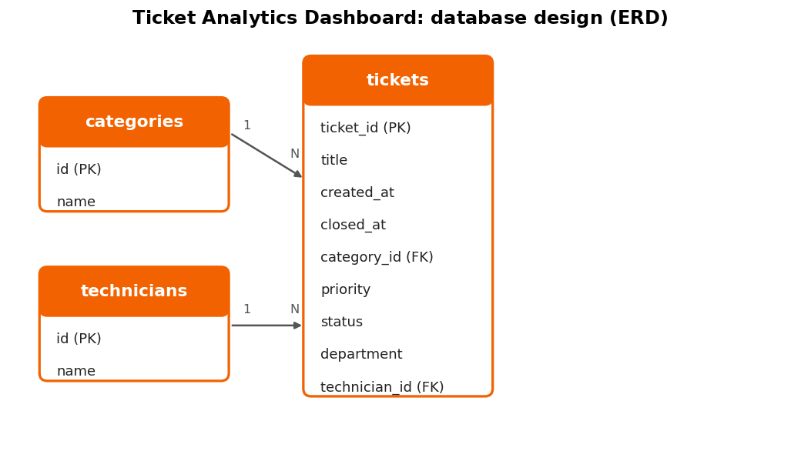
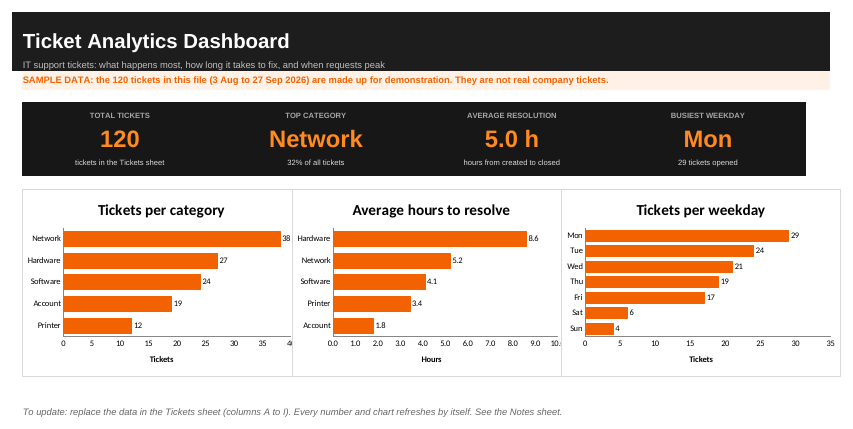

Project 2: Ticket Analytics Dashboard
Data analysis: raw ticket data, cleaning, SQL queries, charts and an Excel dashboard. Status: finished on sample data
Project overview
This project analyzes IT support tickets. I take a raw, messy export, clean it, load it into a database, answer questions with SQL, and show the answers in charts and an Excel dashboard that show which problems happen most, how long they take to fix, and when requests peak, so an IT team can plan its work.
Problem statement
IT teams receive many tickets but rarely study the pattern. Without analysis, repeat problems stay unfixed and staff are not scheduled for the busiest days.
Objectives
- Clean and organize the ticket data.
- Answer four questions with SQL: what, how long, when and who.
- Build charts and an Excel dashboard.
- Write findings and recommendations.
Target users
An IT manager who plans staffing and priorities, and help desk technicians who want to find and fix repeat problems.
Tools
Python (cleaning, charts)SQLite databaseMySQL scriptSQL queriesExcel dashboardDeliverables
- Raw data file
- Cleaned dataset
- Database (MySQL script and SQLite file)
- SQL queries file
- Charts (4 images)
- Excel dashboard
- Findings and recommendations
- README documentation
The analysis workflow
- Raw data: a messy export of 123 ticket rows
- Cleaning: remove duplicates, fix spelling and dates (120 rows left)
- Database: load the clean data into SQLite and MySQL
- SQL: six queries answer what, how long, when and who
- Charts and Excel dashboard: four chart images and a dashboard with live formulas
- Findings: written conclusions and recommendations
How to repeat it
Clean the raw data (Python 3, no extra packages)
python analysis/clean_data.py data/raw/tickets_raw.csv -> data/tickets.csv
Database and SQL
MySQL: phpMyAdmin > Import > database/ticket_analytics.sql
SQLite: open database/ticket_analytics.db in DB Browser for SQLite
Queries: sql/queries.sql (MySQL) or sql/queries_sqlite.sql (SQLite)
python database/export_results.py saves each query result as a CSV in results/
Charts and dashboard
python analysis/make_charts.py redraws the four chart images (needs matplotlib)
Excel dashboard: dashboard/dashboard.xlsxAll data is sample data. Replace it with real data only with permission and with all names removed.
Data source
Sample data: 120 made-up tickets created for this project, from 3 August to 27 September 2026. They are not real company tickets and contain no personal information.
Data dictionary
| Column | Type | Meaning |
|---|---|---|
ticket_id (PK) | Number | Unique ticket number |
title | Text | Short description of the problem |
created_at | Date and time | When the ticket was opened |
closed_at | Date and time | When it was resolved (empty if still open) |
category_id (FK) | Number | Links to the categories table (Network, Hardware, Software, Account, Printer) |
priority | Text | Low, Medium or High |
status | Text | Open, In progress or Closed |
department | Text | Who reported the problem |
technician_id (FK) | Number | Links to the technicians table |
Data cleaning
From data/raw/tickets_raw.csv (123 rows) to data/tickets.csv (120 rows):
- 3 duplicate rows removed.
- 25 rows with extra spaces or mixed spelling fixed, such as "network", "NETWORK" and " Network ".
- 18 rows with a second date format converted to one format.
- Checked that closed_at is after created_at: 0 problems.
- Category and technician names replaced with ids.
Raw data sample (SAMPLE data, first rows of the raw file)
| ticket_id | title | created_at | closed_at | category | priority |
|---|---|---|---|---|---|
| 26 | Connected but no internet | 2026-08-17 16:45:00 | 2026-08-18 02:45:00 | Network | High |
| 98 | Email client not opening | 2026-09-15 12:13:00 | 2026-09-15 13:13:00 | Software | Medium |
| 90 | Computer very slow | 2026-09-11 13:22:00 | 2026-09-11 21:22:00 | Hardware | Low |
| 17 | Laptop battery drains fast | 2026-08-12 10:46:00 | 2026-08-12 23:46:00 | Hardware | Low |
| 86 | Software license expired | 2026-09-10 13:26:00 | 2026-09-10 17:26:00 | Software | High |
| 28 | Cannot reach shared folder | 2026-08-18 16:26:00 | 2026-08-19 00:26:00 | Network | low |
| 94 | Forgot password | 2026-09-15 08:28:00 | 2026-09-15 11:28:00 | Account | Medium |
| 65 | Keyboard or mouse not working | 2026-08-31 16:22:00 | 2026-09-01 05:22:00 | Hardware | High |
The raw file was generated from the sample data to practise cleaning. It is not a real company export. Open the full raw file.
Data model (ERD)

Entity relationship diagram: tickets, categories, technicians
SQL queries
-- 1. Tickets per category
SELECT c.name AS category, COUNT(*) AS total
FROM tickets t JOIN categories c ON t.category_id = c.id
GROUP BY c.name ORDER BY total DESC;
-- 2. Average hours to resolve, per category
SELECT c.name AS category,
ROUND(AVG(TIMESTAMPDIFF(HOUR, t.created_at, t.closed_at)), 1) AS avg_hours
FROM tickets t JOIN categories c ON t.category_id = c.id
WHERE t.closed_at IS NOT NULL
GROUP BY c.name ORDER BY avg_hours DESC;
-- 3. Tickets per weekday
SELECT DAYNAME(created_at) AS weekday, COUNT(*) AS total
FROM tickets GROUP BY weekday ORDER BY total DESC;
-- 4. Tickets per day
SELECT DATE(created_at) AS day, COUNT(*) AS total
FROM tickets GROUP BY day ORDER BY day;
-- 5. Repeat problems
SELECT title, COUNT(*) AS times
FROM tickets GROUP BY title HAVING COUNT(*) > 1 ORDER BY times DESC;
-- 6. Technician workload
SELECT te.name AS technician, COUNT(*) AS tickets
FROM tickets t JOIN technicians te ON t.technician_id = te.id
GROUP BY te.name ORDER BY tickets DESC;Every query result was compared with the totals in the Excel dashboard. They match.
Charts from the SQL results
Sample data. Made with analysis/make_charts.py.


Dashboard summary (sample numbers)
Tickets per category
Average hours to resolve
Tickets per weekday
My Excel dashboard

Screenshot of my Excel dashboard
Findings
On the sample data, Network is the biggest category with 38 of 120 tickets (32%), followed by Hardware (27) and Software (24). Hardware tickets take the longest to resolve, 8.6 hours on average, and Account tickets are the fastest at 1.8 hours. Monday is the busiest weekday with 29 tickets, and weekends are quiet (10 tickets in total). The most repeated problems are "Cannot reach shared folder" and "Cannot connect to Wi-Fi", with 10 tickets each. Because this is sample data, these findings show how the analysis works. They are not real results.
Recommendations
Based on the sample data: put the most effort into network problems, which are about a third of all tickets, and fix the repeat causes first, such as shared folder access and Wi-Fi connection. Look at why Hardware tickets take about 8.6 hours to fix, for example by keeping common spare parts ready. Schedule more technicians on Mondays, the busiest day, and fewer on weekends.
Data quality checks
| Check | How I check it | Result |
|---|---|---|
| Row count matches the source file | Compare counts in SQL and in the cleaned file | Pass: 120 rows in the file and in the database |
| Cleaning keeps the right rows | 123 raw rows minus 3 duplicates | Pass: 120 clean rows |
| No duplicate ticket_id | Query with GROUP BY ticket_id HAVING COUNT(*) > 1 | Pass: no duplicate ticket numbers |
| No ticket closed before it was created | Query where closed_at < created_at | Pass: no ticket is closed before it was created |
| SQL totals match the Excel dashboard totals | Compare each chart total with the Excel dashboard | Pass: totals match the Excel dashboard |
| Category names are consistent | List the distinct category values | Pass: only the 5 agreed category names are used |
Limitations
The data is a small sample: 120 made-up tickets over 8 weeks, all of them closed, so the findings only show how the analysis works. SQLite suits this small data set and would be replaced by MySQL for larger data.
Future improvements
Use real tickets (with permission and with names removed), add more months of data, build a Power BI version of the dashboard, and add a ticket entry web form.